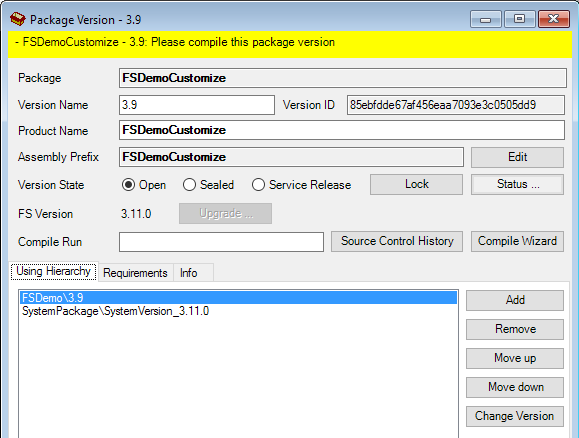
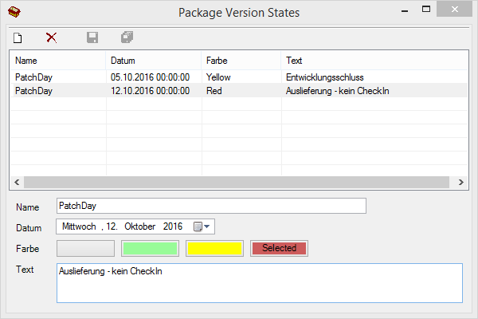

Package-Versionen
In der Baumstruktur des Package Managers werden unterhalb eines Packages alle definierten Entwicklungsstände (Versionen) mit dem Symbol  für Version dargestellt.
für Version dargestellt.
Durch Doppelklick auf eine Version wird ein Fenster geöffnet, in dem alle Einstellungen zu der Version vorgenommen werden können.

Package
Name des Package Herstellers (nicht editierbar).
Version Name
Bezeichnung der Version. Es wird empfohlen, ausschließlich gültige Versionsnummern in dem Format "Major.Minor.Build.Revision" (z.B. 3.11 oder 3.11.1.5) zu verwenden. Es funktionieren auch andere Versions-Bezeichnungen, allerdings können diese dann nicht korrekt sortiert werden.
Version ID
Die interne ID der Package-Version (nicht editierbar).
Product Name
Der Name des Produkts. Dieser kann z.B. bei Versions-Informationen innerhalb der End-Anwendung ausgegeben werden.
Assembly Prefix
Kürzel, welches vor die Assemblies und den internen Elementnamen (Komponenten, Forms, Tabellen, …) gehängt werden soll. Der Assembly Prefix kann nur bearbeitet werden, wenn noch kein Compiler ausgeführt wurde bzw. es noch keinen Workspace für diese Package-Version gibt.
Ist das Feld gesperrt, kann diese Sperre mit dem Button Edit aufgehoben werden. Dies hat zur Folge, dass alle Workspaces für diese Package-Version und ALLE davon abhängigen Package-Versionen gelöscht werden. Anschließend müssen alle diese Package-Versionen neu kompiliert werden.
Version State:
Open: Die Package-Version ist offen und befindet sich in der Entwicklung. Es gibt keinerlei Einschränkungen bei der Arbeit. Bei jedem Compile mit dem FrameworkCompiler / Compile-Wizard wird ein neuer Compile-Stempel erzeugt – das bedeutet, dass alle anhängigen Package-Version ebenfalls neu kompiliert werden müssen.
Sealed: Die Package-Version ist versiegelt. Es können keine Änderungen vorgenommen werden. Es kann sich kein Entwickler mehr an dieser Package-Version anmelden. Damit eine Package-Version in den Status Sealed versetzt werden kann, darf nichts mehr ausgecheckt sein und alle Änderungen müssen mit dem FrameworkCompiler / Compile-Wizard kompiliert sein.
Service Release: An der Package-Version können nur Änderungen an Methoden-Inhalten vorgenommen werden – es darf keine Schnittstellen-Änderungen mehr geben. Bei einem FrameworkCompiler / Compile-Wizard bleibt der Compile-Stempel erhalten. Dadurch brauchen abhängige Package-Versionen nicht neu kompiliert werden und es ist ein sehr schneller Update möglich.
Der Version State kann jederzeit geändert werden. Dabei werden entsprechende Plausibilitäten geprüft, um eine Fehl-Bedienung zu unterbinden.
Button Lock
Damit kann eine Package-Version gesperrt werden, damit sich niemand mehr daran anmelden kann. Mit dem Klick erscheint ein Dialog, in dem eine Begründung eingegeben werden kann. Diese Begründung wird im Login-Dialog angezeigt.

Falls noch Benutzer angemeldet sind, wird dieser Dialog angezeigt. Hier gibt es die folgenden Möglichkeiten:
Cancel: den Vorgang abbrechen.
Retry: es erneut versuchen, nachdem z.B. dem Benutzer Bescheid gegeben wurde.
Kill User Sessions: die Sitzungen der Benutzer zu beenden. Bei dieser Aktion wird 130 Sekunden gewartet. Das ist die Zeit, die im Extremfall benötigt wird, bis ein Benutzer zum Beenden seiner Sitzung gezwungen wurde. (60 Sekunden bis zur Hinweismeldung + 60 Sekunden bis zum endgültigen Abbruch + 10 Sekunden Reserve)
Während dieser Dialog angezeigt wird, können sich keine neuen Benutzer mehr anmelden.
Dieser Mechanismus wird automatisch verwendet, um eine Package-Version während eines Upgrades vor einer Benutzung abzusichern.
Button Status…
Öffnet einen Dialog zum Festlegen einer Statusmeldung, die jedem Nutzer dieser Package Version beim Einloggen und in der Entwicklungsumgebung selbst angezeigt wird.

Wird kein Informationstext angegeben, so wird der Status nicht angezeigt. Ansonsten ist er an den unten aufgeführten Positionen in der Entwicklungsumgebung sichtbar. Wird in der Combobox Name ein Status ausgewählt, dann gelten die Einstellungen, die in dem entprechenden Dialog gepflegt sind und es wird, sofern vorhanden, an allen Stellen zusätzlich der als nächstes greifende Status angezeigt.
- Login Dialog in der Detailbeschreibung zu einer Package Version:

- Status Bar im FrameworkDesigner:

- Im Check Out Dialog:

- Check In Dialog:

Bei Status Rot muss im Check-In Dialog zusätzlich eine Begründung eingegeben werden, bevor der Check-In möglich ist. Diese Begründung wird mit dem Zusatz #warning State Red in den Check-In-Kommentar eingefügt.
Über den Menüpunkt Tools / Package Versions States im Package Manager wird dieser Dialog geöffnet. Hier können mehrere Package Version Status gepflegt werden. Wenn mehrere Status den selben Namen haben, werden sie dem Datum entsprechend nacheinander aktiv, sofern der Name an einem Package hinterlegt ist.

FS Version
Framework Studio Version, mit der die Package Version bearbeitet werden kann. (nicht editierbar)
Button Upgrade
Note
nur aktiv, wenn die FS Version der Package-Version kleiner ist als die Version, in der der Package Manager gestartet wurde
Für die Package-Version wird ein Upgrade auf die aktuelle Framework Studio Version durchgeführt.
Warning
Der Upgrade-Vorgang lässt sich nicht rückgängig machen. Das heißt, dass dieses Label mit älteren Framework Studio Versionen nicht mehr verwendet werden kann.
Compile Run
In diesem Feld kann ein Name eingegeben werden, mit dem über die FSConsole.exe gesteuert werden kann, welche Package-Versionen kompiliert werden sollen.
Button Source Ctrl. History …
Öffnet die Source Control History für die aktuelle Package Version. Standardmäßig werden hierbei alle Elemente angezeigt. Sowohl eingecheckte als auch ausgecheckte Elemente.
Button Compile Wizard
Ruft für die Package-Version den Compile Wizard auf.
Auf der Registerkarte Using Hierarchy werden die Package Versionen angezeigt, die von dieser Version verwendet werden. Die Versionen werden in der Verwendungsreihenfolge angezeigt.
Die Using Hierarchy kann von den Requirements wie folgt abweichen:
In der Using Hierarchy können zusätzlich Labels von weiteren Packages aufgeführt werden.
Von einem Label in den Requirements kann ein anderes Label des gleichen Packages in der Using Hierarchy aufgeführt werden.
Auf der Registerkarte Requirements werden tabellarisch die Abhängigkeiten der Version von anderen Packages bzw. Package Versionen dargestellt, also auf welchen Packages in welcher Version das aktuelle Package aufbaut. Diese Information wird beim Import im Repository abgelegt und ist nicht veränderbar.
Die Registerkarte Info stellt interne Informationen zum Kompilierstatus dar.
Auf allen Registerkarten befindet sich ein Button Refresh zum Aktualisieren der dargestellten Informationen.
Register Languages
Auf dieser Registerkarte können die Sprachen für die Package-Version definiert werden.

Eine Sprache besteht aus den folgenden Informationen:
- Iso-Code: Der ISO 639-1 Code der Sprache. Dieser besteht aus 2 kleinen Buchstaben - z.B.
de,en. - Name: Der Name der Sprache. Dieser wird in der IDE angezeigt.
An einer Package-Version können beliebig viele Sprachen definiert werden. Diese werden automatisch in die abhängigen Package-Versionen vererbt.
Warning
Auf der Application Startseite werden nur Sprachen angeboten, für die im Wörterbuch mindestens ein MLKey übersetzt ist.
Languages from Base
Diese Liste zeigt die Sprachen aus den Basis-Packages an.
Languages from current Package
In dieser Liste können die Sprachen für die Package-Version gepflegt werden. Es können zusätzliche Sprachen definiert werden
Wird eine Sprache mit einem identischen Iso-Code wie im Basis-Package angelegt, dann überschreibt der Eintrag das Basis-Package. In der IDE wird dann die überschriebene Bezeichnung der Sprache angezeigt.
Note
Wird eine Sprache gelöscht, dann bleiben die Übersetzungen an den Records und im Wörterbuch trotzdem erhalten.